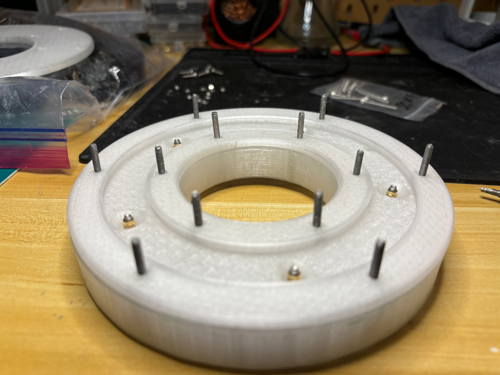
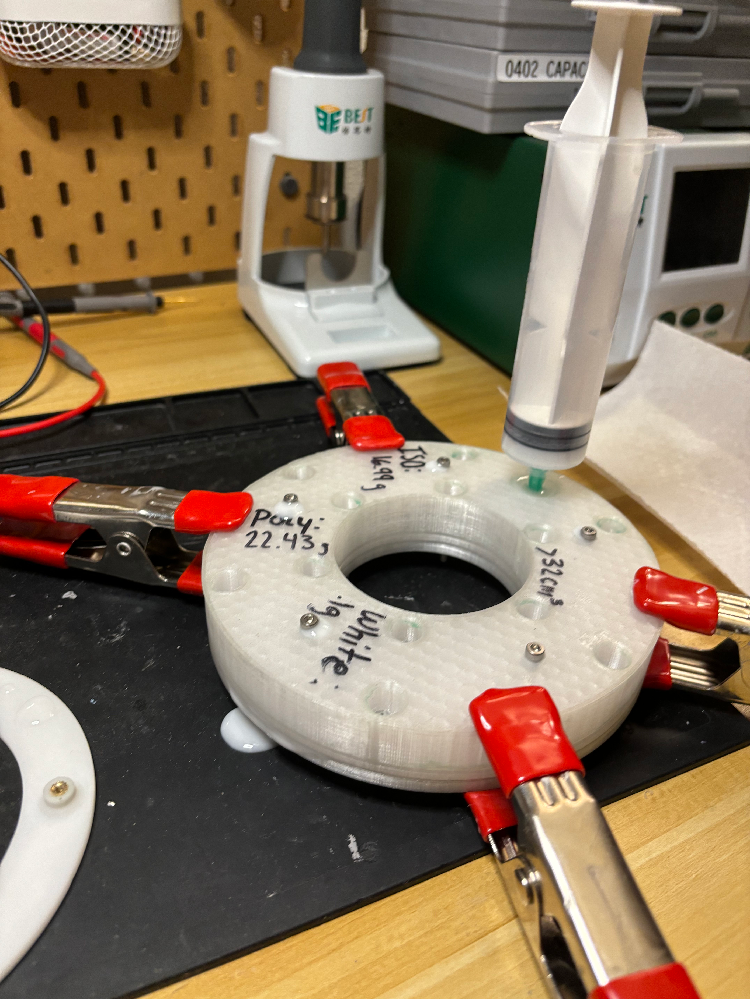
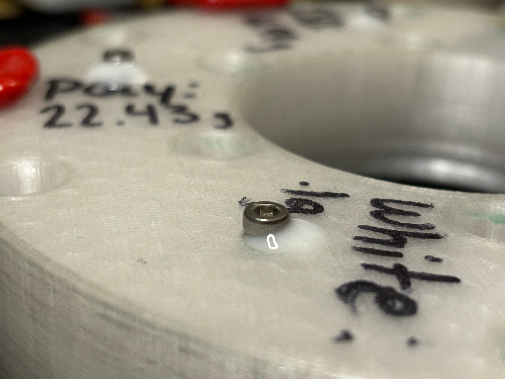

I printed the majority of the housing using PLA on my 3D printer. I took the time on one of the Light Rings to sand a polish the housing to give it a really smooth look. On the others I decided the print quality was good enough as is, so I left the layer lines.
I ended up deciding to cast the diffuser in Polyurethane plastic. I created a four piece mold shown in the pictures below and used PARTALL® Paste #2 Mold Release Wax to prevent the cast parts from sticking to the 3D printed mold. As Polyurethane is a thermoset plastic, I couldn't press in heat set inserts. Instead I had to directlty cast them into the part (see the first picture below . After the mold assembly was complete, I mixed a precise ammount of resin with a touch of white dye, and used a syringe to inject the plastic into the mold.



The part I am most excited about in this project is the decals. To make them, the designs are printed on a normal sticker paper, laminated with clear vinyl, then cutout using a Cricut machine.